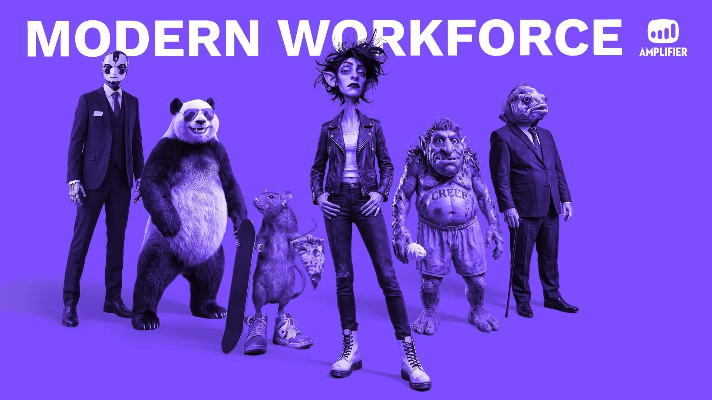
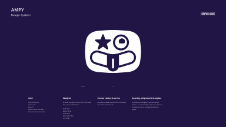
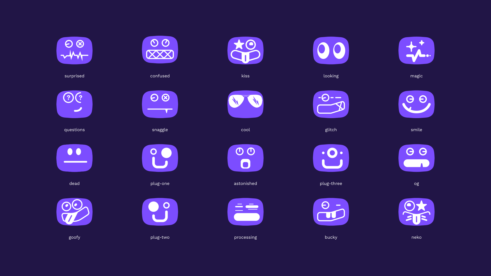
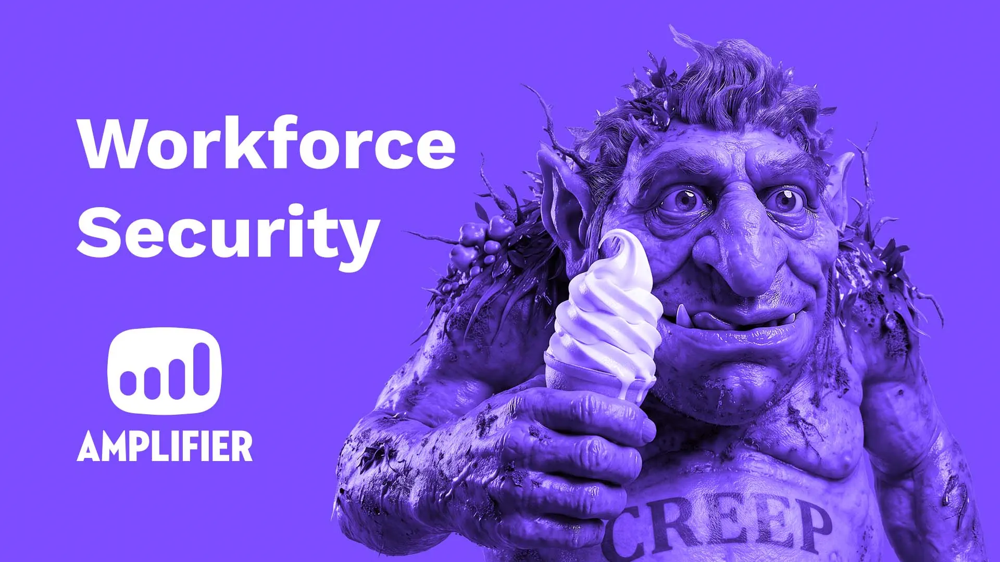

Case
Study: Amplifier Security
Amplifier Security is an AI-driven cybersecurity platform built for enterprise environments. GRAPHIC HAVOC partnered with Amplifier to evolve its brand identity and develop a design system that makes complex technical ideas easier to understand without sacrificing credibility for a highly technical audience.
Building from an existing logotype and an earlier version of the Avatar, GRAPHIC HAVOC refined the Avatar, evolved the official logo, and expanded the identity into AMPY, custom iconography, infographics, imagery, motion, campaigns, product touchpoints, web experiences, and environmental applications. Recent work has strengthened the relationships between those elements while extending the system to meet changing communication needs.

Clarity Without Losing Credibility
Amplifier needed to communicate a technically complex cybersecurity product to enterprise audiences while its positioning continued to evolve.
Dense information had to become easier to understand and quicker to read without making the communication generic, reductive, or less credible to a sophisticated technical audience.
Progressive Simplification
Through ongoing collaboration with Amplifier and copywriting partners, complex technical information was distilled to the clearest useful message. GRAPHIC HAVOC then translated those messages through custom iconography, infographics, imagery, AMPY, and motion.
The objective was not simply to say less. It was to determine what mattered most, then give that information enough structure, personality, and authority to be understood quickly.


More Than a Mascot
AMPY is Amplifier's mascot and brand ambassador. Built from the Avatar's foundational geometry, the character gives the brand a recognizable personality across communications.
AMPY also appears inside the product, giving Amplifier's AI a familiar presence in employee-facing interactions. Its range of expressions communicates emotion, intent, and context, making AMPY a functional part of product interactions and broader brand communications rather than a decorative character.
Built From a Common Geometry
GRAPHIC HAVOC refined and evolved the Avatar from an earlier design, then used its proportions and rounded geometry as the foundation for a broader visual system.
Those principles informed AMPY, the custom icon library, illustration, and motion. Shared grids, curves, spacing, and line weights created consistency across the system. A controlled imagery treatment extended the identity across photography, AI-generated imagery, and video. The shared foundation keeps AMPY and the iconography recognizably related without becoming repetitive.

Built to Scale
The system supports different kinds of communication without requiring every application to look identical. It can clarify technical workflows through infographics, support product marketing, extend into advertising campaigns, and scale across presentations, social content, web experiences, events, and physical environments.
The current Amplifier website, creatively directed, art directed, designed, and built by GRAPHIC HAVOC, is one expression of the larger system. Wild TH@NGS shows the system becoming more expressive and campaign-driven, while the JNUC 2026 environment extends the identity into physical space.
The result is a communication system that gives Amplifier a consistent way to express complex ideas as the company continues to evolve. Technical information can be simplified without losing authority. Product touchpoints, campaigns, web, motion, and physical applications can take on distinct roles without losing their connection to the larger identity. That flexibility gives Amplifier room to change while remaining recognizably its own.